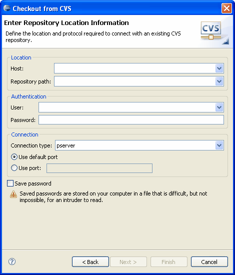

© copyright 2005, 2006, 2007 Cisco Systems, Inc. - All rights reserved
Service Contracts are developed in a team environment, and have a lifecycle of their own based on additional requirements and/or application upgrades, it is essential that your Service Contract model (ie. Tigerstripe projects) are placed under version control.
This section provides documentation on integrating your Tigerstripe project with CVS (Concurrent Versions System).
Note: Tigerstripe Workbench directly leverages the Eclipse integration with various versioning systems. For more information on specific operations or functionalities, either with CVS or any other versioning system, please refer to the appropriate Eclipse documentation.
Tigerstripe uses a set of XML and Java files for internal representation of all Tigerstripe Artifacts and project information. This makes it possible to establish a fine-grain version control mechanism, where each Artifact is controlled independently.
The following operations should be considered with version control:
Each of these topics is detailed in one of the following sections.
Tigerstripe Projects are fully integrated into Eclipse, which allows you to directly leverage the integration with CVS.
To share a Tigerstripe Project
- Open your Tigerstripe Perspective. For more information, refer to Tigerstripe Workbench Perspective.
- Right-click on the project you want to place under version control in the Tigerstripe Explorer.
- Select Team and click Share project.The following dialog box displays:
- Select CVS and click Next. The following dialog box displays:
- Enter a CVS repository host in the Host text box. If you have already set up a respository, you can select a repository host from the drop-down list.
- Enter a CVS respository location in the Respository path text box or select an existing repository from the drop-down list.
- Enter the user authentication information in the Authentication area.
- Select the connection information in the Connection area.
- Click Next. The following dialog box displays:
- Select the identifier of the project as it will appear on the CVS respository. You have the following options
- Use project name as module name: the project name (as it appears in the Tigerstripe Explorer) is used as the identifier.
- Use specified module name: the provided name is used as the name of the CVS identifier.
- Use an existing module: use an existing CVS identifier obtained directly from the CVS repository. For more details, refer to the corresponding Eclipse documentation.
Note: This option adds an extra step in the process where you are requred to select the target tags/versions.- Click Next. The following dialog box displays:
- Make sure all of your project files appear in the dialog box window, and click Finish. Your project is now under version control. The label of each artifact and each file in the project now have a version number attached in the Tigerstripe Explorer.
Once your Tigerstripe project is stored in a CVS repository, you can import it into any Eclipse workspace.
To import a project:
Before you Begin: Make sure that your Tigerstripe Perspective is active.
- Right-click anywhere in Tigerstripe Explorer and select Import. The following dialog box displays:
- Click CVS, select Projects from CVS, and click Next.. The following dialog box displays:

- Enter a CVS repository host in the Host text box. If you have already set up a respository, you can select a repository host from the drop-down list.
- Enter a CVS respository location in the Respository path text box or select an existing repository from the drop-down list.
- Enter the user authentication information in the Authentication area.
- Select the connection information in the Connection area.
- Click Next. The following dialog box displays:
- Select the name of the module in CVS to import. You can either enter the exact name of the module by selecting Use specified module name or you can browse to an existing module in the repository by selection Use existing module.
- After entering or selecting the module, click Next.
- Select Check out as project in the workspace. Optionally, you can specify the name of your local copy of the project in your workspace.
- Click Finish.
Your imported project will appear in your Tigerstripe Explorer.
Note: Each Artifact and additional file is decorated with their version number in CVS.
When a Tigerstripe Project is shared through CVS (or is imported from a CVS repository), all Artifacts and files are versioned separately. They display the version number in CVS as a decoration on their names in the Tigerstripe Explorer.
Similar to any other Eclipse project under CVS control, normal CVS operations are available such as Update, Commit,and Synchronize. Complete the following procedure to access the CVS operations available.
To access files through CVS
- Right-click on the target object in the Tigerstripe Explorer, and select Team.
- Select the action that you want to perform.
For more information, refer to CVS or Eclipse documenation.

© copyright 2005, 2006, 2007 Cisco Systems, Inc. - All rights reserved